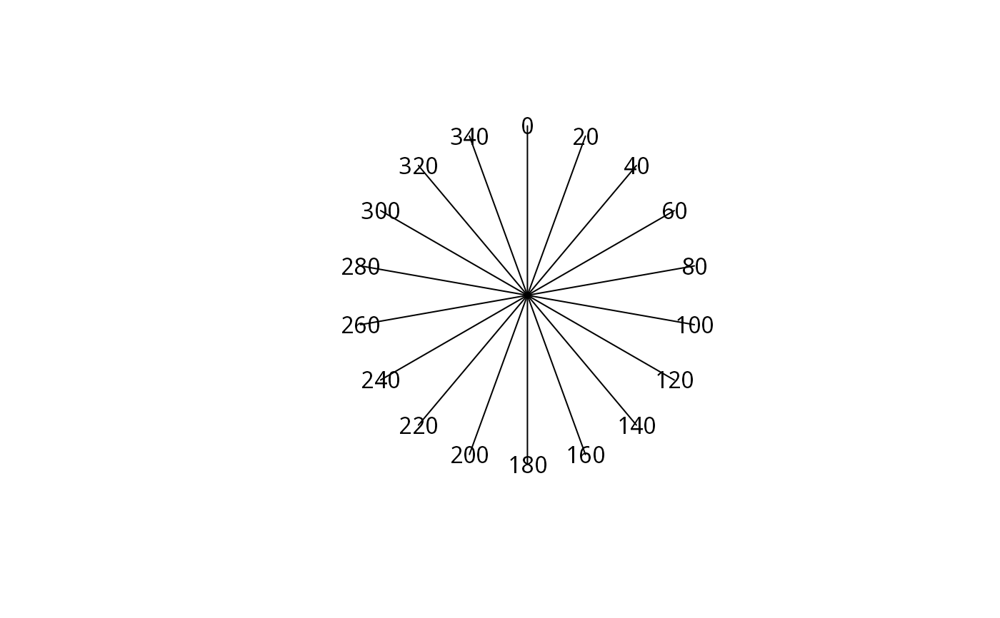

The function connects two points into a line segment.
ray(from, to)A SpatialLines object.
# ctr = rgeos::gCentroid(build)
ctr = as(sf::st_centroid(sf::st_union(sf::st_geometry(sf::st_as_sf(build)))), "Spatial")
angles = seq(0, 359, 20)
sun = mapply(
shadow:::.sunLocation,
sun_az = angles,
MoreArgs = list(
location = ctr,
sun_elev = 10)
)
rays = mapply(ray, MoreArgs = list(from = ctr), to = sun)
rays$makeUniqueIDs = TRUE
rays = do.call(rbind, rays)
plot(rays)
sun = do.call(rbind, sun)
text(sun, as.character(angles))
